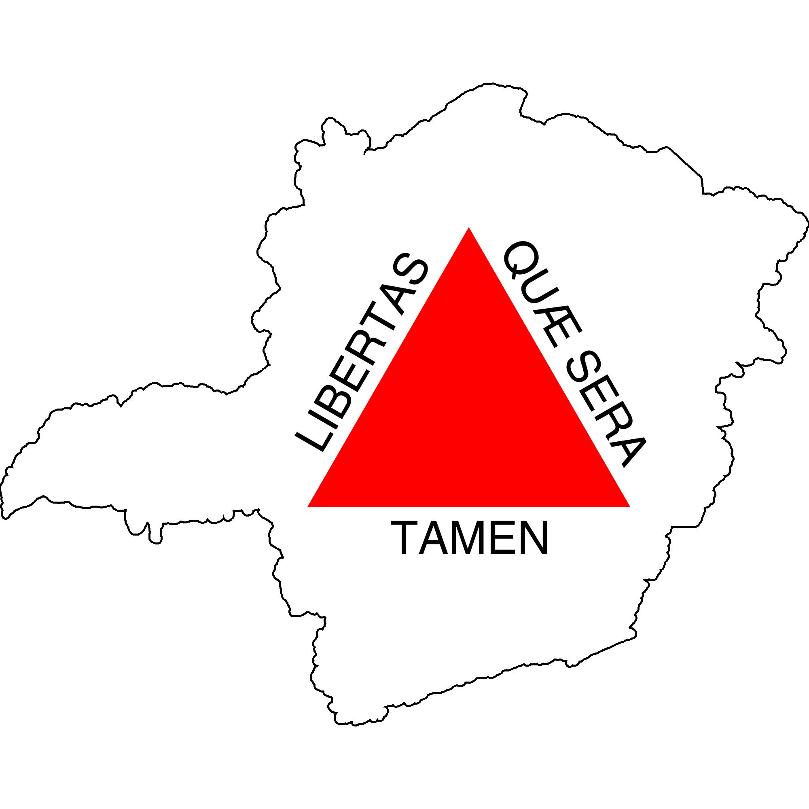
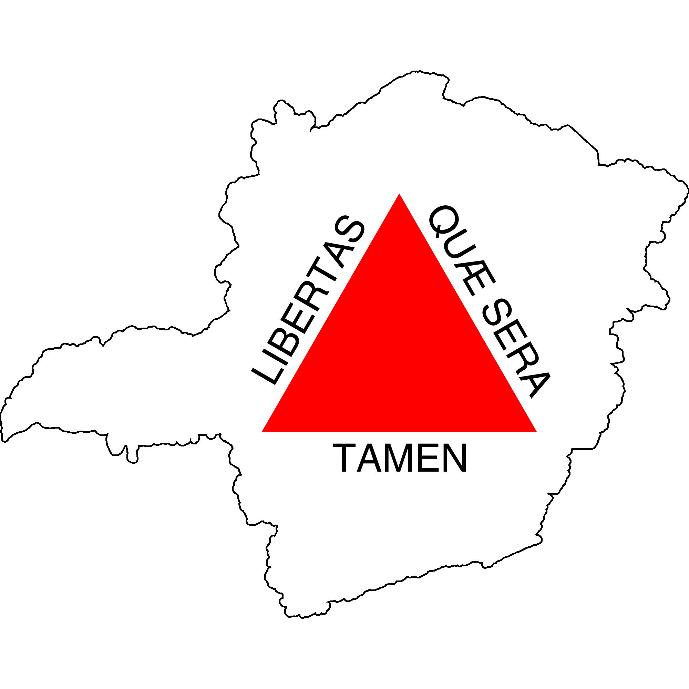

Minas Gerais começou a ser desbravada no século XVI(dezesseis) pelos bandeirantes que adentraram no território brasileiro em busca de ouro e pedras preciosas. Primeiramente, em 1709, Minas e São Paulo formavam uma única capitania, porém, em 1720 elas foram divididas e a atual Minas Gerais foi chamada de a Capitania das Minas do Ouro. A abundância de ouro levou muitas pessoas às margens dos rios e depois às montanhas para garimpar, isso levou a criação de cidades e vilas. Minas de Ouro tornou-se um importante centro econômico da colônia. A Coroa Portuguesa cobrava altos impostos pelo ouro encontrado e exercia um grande controle sobre a população, dificultando inclusive outras formas de economia. A insatisfação com a Coroa Portuguesa juntou-se a questão da derrama (uma forma de cobrança que era aplicada caso a arrecadação anual não chegasse a cem arrobas, cerca de 1.500 kg, para a metrópole) levou a Inconfidência Mineira.
A atual cidade Mariana foi a primeira vila de Minas Gerais, fundada em 1711 (Imagem em domínio público)
A Inconfidência Mineira foi uma revolta, que não chegou a acontecer, organizada pela pequena elite de Vila Rica. O movimento tinha como objetivo tornar Minas Gerais uma república e foi arquitetado durante anos, porém, denúncias, especialmente a de Joaquim Silvério dos Reis, deixaram a Coroa ciente do plano. Após as denúncias a Coroa Portuguesa deu início a uma série de prisões e interrogatórios. O mais famoso dos inconfidentes é Tiradentes, talvez isso se deva ao fato de que de todos os demais envolvidos que tiveram como pena a morte foram perdoados por D. Maria, enquanto Tiradentes foi morto enforcado. O enforcamento se deu no dia 21 de abril de 1972, feriado nacional, e depois disso o corpo dele foi esquartejado, a cabeça ficou exposta em uma estaca e o restante do corpo espalhado por uma estrada. A Inconfidência Mineira foi um episódio tão importante que temos uma referência a ela até na bandeira do estado "Libertas quae sera tamem" (Liberdade ainda que tardia)".

 

Minas Gerais é repleto de histórias que foram cruciais para a história do Brasil, acima foi citada a mais conhecida de todas e explicada a história do estado, agora será mostrada uma lista com cinco mineiros e mineiras que fizeram, ou fazem, história nas suas áreas (Clique no nome para ter acesso a biografia):
.png)